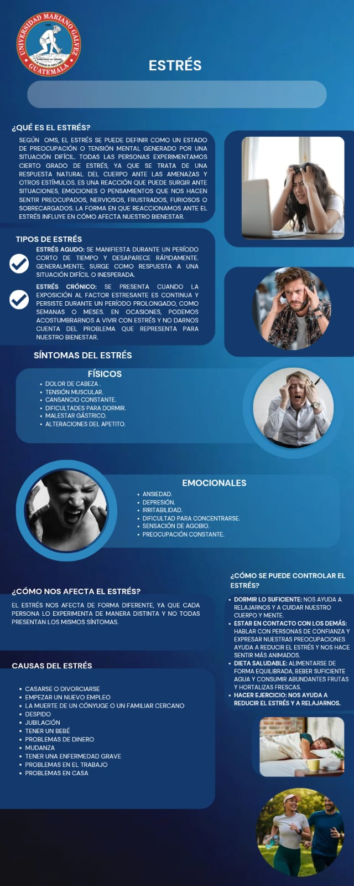

¿Qué es el estrés?
El estrés es la respuesta automática y sobre todo natural de nuestro cuerpo ante las situaciones que se nos presente y que esto nos resultan amenazadoras o desafiantes. Nuestra vida y nuestro entorno, en constante cambio, nos exigen continuas adaptaciones; por tanto, cierta cantidad de estrés (activación) es necesaria para estar en alerta ante cualquier amenaza. Por lo tanto, tendemos a creer que el estrés es consecuencia de circunstancias extremas a nosotros, cuando en realidad entendemos que un proceso de interacción entre los eventos del entorno y nuestras respuestas cognitivas, emociónales y físicas. Cuando la respuesta de estrés se prolonga o intensifica en el tiempo, nuestra salud, nuestro desempeño académico o profesional, e incluso nuestras relaciones personales o de pareja se pueden ver afectados.
Los dos tipos de estrés
Estrés agudo
es la forma más común y se presenta como una respuesta inmediata a un desafío o amenaza, suele ser de corta duración y desaparece una vez que se resuelve la situación. Tenemos los que es el estrés agudo episódico: que ocurre cuando una persona experimenta episodios frecuentes de estrés agudo; es una situación habitual en personas con vidas muy ocupadas o que tienden a preocuparse excesivamente.
Estrés crónico
el más perjudicial, ya que persiste durante prolongados periodos y puede ser causado por problemas continuos. Este tipo de estrés suele causar una sensación de desesperanza y tiene un impacto negativo en la salud física y mental de la persona
- Duración: semanas, meses o años
- Síntomas: agotamiento, insomnio, irritabilidad, problemas digestivos
- Impacto: riesgo de depresión, hipertensión, enfermedades cardíacas
Cómo manejar el estrés
Aquí presentamos algunos puntos importantes a tomar en cuenta:
- Tecnicas de respiración
- Ejercicios físicos
- Mindfulness y meditación
- Tener horas de sueño adecuadas
- Organización y gestión del tiempo
- Conexión social
- tiempo para Hobbies
Infografía

Descargar documento informativo
Haz clic en el botón para descargar un documento de Word con un resumen completo sobre el manejo del estrés.
Descargar.docxVideo informativo
Mira este intretenido video que habla sobre el estrés .
Recursos adicionales
Accede a nuestra carpeta de Google Drive con videos, documentos, guías y más materiales sobre el manejo del estrés.
Abrir carpeta en Google Drive